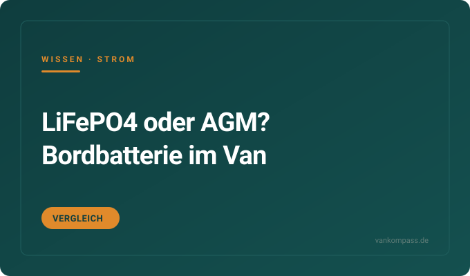

Video-Test
AFERIY P180 PRO im Ford Nugget: 1 kWh Powerstation im Praxistest
Passt unter die Nugget-Küche, 1024 Wh LiFePO4, 1800 W Reinsinus. Alle Fakten aus dem Video von Die2Mays.
Bereich
Welche Powerstation passt, wie viel Wh du wirklich brauchst, LiFePO4 oder AGM, Laden über Solar und Lichtmaschine. Video-Tests, Ratgeber und eine klare Kaufempfehlung.

Redaktions-Tipp
Die 1-kWh-Powerstation, die unter die Küche kleiner Campervans passt und trotzdem Airfryer und Eierkocher stemmt.
Warum wir es empfehlen: Kompakt, leise, LiFePO4 für tausende Ladezyklen und ein Reinsinus-Wechselrichter für empfindliche Geräte. Im Praxistest von Die2Mays läuft sie unter der Nugget-Küche ohne Platzprobleme.
Preis-Range600 bis 800 €Stand Oktober 2026
Bei Amazon ansehenAffiliate-Link * Erst den Praxistest lesenGarantie 7 Jahre nach Registrierung beim Hersteller. Preis bleibt für dich gleich.
Kostenlos als PDF
Strom, Schlafen, Küche, Sanitär, Sicherheit, Werkzeug. Zum Abhaken vor jeder Fahrt, damit du nie wieder ohne Ladekabel, Wasserschlauch oder Keil losfährst.
Passt unter die Nugget-Küche, 1024 Wh LiFePO4, 1800 W Reinsinus. Alle Fakten aus dem Video von Die2Mays.
Welche Lade-Option wann sinnvoll ist, wie lange es dauert und was die 12-V-Steckdose wirklich schafft.

Zyklen, Gewicht, Entladetiefe und Preis pro nutzbarer Wattstunde. Wann sich der Aufpreis rechnet.
Realistische Laufzeiten bei 20, 30 und 35 Grad Außentemperatur, mit und ohne Wechselrichter-Verluste.
Warum Euro-6-Fahrzeuge einen DC-DC-Lader brauchen, welche Amperezahl passt und was beim Einbau zählt.
Temperaturgrenzen der Hersteller, der richtige Ladezustand für Pausen und wo die Box im Van stehen sollte.
Die Fragen, die am häufigsten gesucht werden. Ausführlich beantwortet, mit Zahlen, Rechenwegen und den Fehlern, die du dir sparen kannst.
Die beste Powerstation ist die, die in deinen Stauraum passt und deinen Tagesverbrauch mit Reserve deckt. Für kleine Campervans wie Ford Nugget, VW California oder Marco Polo hat sich die 1-kWh-Klasse bewährt: LiFePO4-Zellen, 1500 bis 2000 W Reinsinus-Wechselrichter, 10 bis 13 kg, passt unter Küche oder Sitzbank.
Worauf du beim Vergleich achten solltest: Erstens LiFePO4 statt Lithium-Ionen, weil die Zellen 3000 und mehr Ladezyklen schaffen statt 500 bis 800. Zweitens Reinsinus, sonst streiken Laptop-Netzteile, Kompressoren und medizinische Geräte. Drittens die Ladeleistung am Netz: 1000 W und mehr bedeuten eine Vollladung in rund einer Stunde auf dem Campingplatz. Viertens die Anschlüsse, die du wirklich nutzt: USB-C mit 100 W oder mehr für den Laptop, ein 12-V-Ausgang für die Kühlbox, ein Solar-Eingang mit XT60 oder MC4.
Typische Fehlkäufe: zu groß für den Stauraum, zu schwer zum Rausnehmen, oder ein Gerät mit lautem Lüfter, der nachts neben dem Bett nervt. Ein konkretes Beispiel aus dem Praxistest ist die AFERIY P180 PRO im Ford Nugget. Zum Praxistest der AFERIY P180 PRO
Für ein Wochenende mit Kompressor-Kühlbox, Handys und Licht reichen 300 bis 600 Wh. Wer mehrere Tage autark steht und zusätzlich Laptop, Kamera-Akkus und eine Wasserpumpe betreibt, braucht 1000 bis 2000 Wh. Dauerhaft autark mit Kühlschrank, Standheizung und Homeoffice landet bei 2000 bis 4000 Wh, dann meist als Festeinbau.
So rechnest du es selbst: Für jedes Gerät Watt mal Stunden pro Tag. Eine Kompressor-Kühlbox zieht im Schnitt 30 bis 50 W, läuft aber nur etwa die Hälfte der Zeit, also 400 bis 600 Wh am Tag. Ein Laptop braucht 40 bis 70 Wh pro Stunde Arbeit. LED-Licht ist mit 5 bis 15 Wh pro Abend fast egal. Eine Dieselstandheizung zieht 10 bis 30 W im Betrieb plus kurz 100 W beim Start. Zwei Handys laden mit etwa 30 Wh.
Addiere alles und rechne 20 Prozent Reserve drauf, weil Wechselrichter Verluste haben und du eine LiFePO4-Batterie zwar tief, aber nicht gern auf null entlädst. Lieber eine Nummer größer als jeden Abend den Ladestand prüfen.
Für Serien-Camper wie VW California, Ford Nugget oder Marco Polo ist eine Powerstation meist die bessere Wahl: kein Einbau, keine Garantie-Fragen, mobil, auch außerhalb nutzbar. Für den Selbstausbau im Kastenwagen ist eine fest verbaute LiFePO4-Zweitbatterie mit Ladebooster die sauberere Lösung.
Die Powerstation gewinnt bei Flexibilität: rausnehmen, am Strand nutzen, im Winter in der Wohnung lagern, beim Fahrzeugwechsel mitnehmen. Sie verliert bei Dauerleistung und Preis pro Wattstunde: 1000 Wh kosten 600 bis 1000 Euro, dieselbe Kapazität als Einbaubatterie 300 bis 500 Euro plus Ladebooster und Verkabelung.
Die Zweitbatterie gewinnt bei Integration: lädt automatisch über die Lichtmaschine, versorgt feste Verbraucher wie Kühlschrank, Pumpe und Standheizung ohne Kabelsalat, sitzt unsichtbar unter dem Sitz. Sie verliert bei Aufwand: Einbau, Absicherung, Kabelquerschnitte, bei Euro-6-Fahrzeugen zwingend ein DC-DC-Ladebooster. Viele Camper fahren beides: Bordbatterie für die Grundversorgung, Powerstation für 230-V-Geräte und mobile Nutzung.
Ja, über die 12-V-Bordsteckdose, allerdings langsam: Die meisten Fahrzeugsteckdosen sind mit 10 bis 15 A abgesichert, das ergibt 100 bis 180 W. Eine 1000-Wh-Powerstation braucht so sechs bis acht Stunden Fahrt für eine Vollladung.
Schneller geht es auf drei Wegen. Erstens mit einem herstellereigenen Fahrzeug-Ladekabel, das manche Powerstations mit 200 bis 400 W laden lassen. Zweitens mit einem DC-DC-Ladebooster zwischen Starterbatterie und Powerstation, der 300 bis 500 W liefert und die Lichtmaschine nicht überlastet. Drittens, bei Powerstations mit Solar-Eingang, über einen 12-V-auf-Solar-Adapter mit XT60- oder MC4-Stecker: Der Solareingang verträgt oft 200 bis 500 W und lädt deutlich schneller als die Zigarettenanzünder-Steckdose.
Wichtig: Nur bei laufendem Motor laden, sonst ziehst du die Starterbatterie leer. Und die Steckdose im Fahrzeug darf nicht dauerhaft am Limit ihrer Sicherung laufen, sonst wird das Kabel heiß. Wer regelmäßig unterwegs lädt, sollte eine direkt an der Batterie abgesicherte Leitung legen lassen.
Eine Kompressor-Kühlbox läuft an einer 1000-Wh-Powerstation realistisch 20 bis 30 Stunden, bei 35 Grad Außentemperatur eher 15 bis 20. Eine 500-Wh-Powerstation schafft entsprechend die Hälfte. Thermoelektrische Kühlboxen sind keine Option: Sie ziehen dauerhaft 40 bis 60 W und kühlen schlecht.
Die Rechnung: Eine Kompressor-Kühlbox mit 40 bis 50 Litern hat eine Aufnahme von 35 bis 60 W, läuft aber nur, wenn der Kompressor anspringt, also je nach Außentemperatur und Öffnungshäufigkeit 30 bis 60 Prozent der Zeit. Das ergibt im Mittel 15 bis 35 W, also 360 bis 840 Wh pro Tag.
So verlängerst du die Laufzeit: Die Kühlbox über 12 V betreiben statt über 230 V, weil der Wechselrichter 10 bis 15 Prozent Verlust bringt. Vorgekühlte Lebensmittel einfüllen. Die Box in den Schatten stellen und nicht neben die Standheizung. Eine Isolierhaube spart je nach Modell 20 bis 30 Prozent. Und die Temperatur auf 4 bis 6 Grad statt 2 Grad stellen, das reicht für fast alles außer rohem Fisch.
100 Ah LiFePO4 entsprechen rund 1280 Wh und sind zu 80 bis 90 Prozent nutzbar. Für Wochenend-Camper mit Kühlbox und Licht reichen 100 Ah. Für mehrere Tage Autarkie mit Kühlschrank, Laptop und Standheizung sind 200 Ah sinnvoll. Wer eine 230-V-Kaffeemaschine oder Induktionsplatte betreiben will, braucht 300 Ah und einen Wechselrichter mit 2000 W oder mehr.
Umrechnung, damit du Powerstations und Einbaubatterien vergleichen kannst: Ah mal 12,8 V ergibt Wh. Eine 100-Ah-AGM-Batterie hat zwar ebenfalls 1200 Wh auf dem Papier, davon sind aber nur 50 Prozent nutzbar, weil Tiefentladung sie schnell altern lässt. Deshalb ersetzt eine 100-Ah-LiFePO4 in der Praxis eine 200-Ah-AGM, bei halbem Gewicht.
Zwei Dinge, die oft vergessen werden: Die Batterie braucht ein passendes Ladegerät, das LiFePO4-Ladekurven kennt, sonst wird sie nie ganz voll oder altert vorzeitig. Und sie mag keine Minusgrade beim Laden; Modelle mit integrierter Heizung oder ein Temperatursensor am Ladebooster lösen das. Für den Winter in den Alpen ist das kein Detail, sondern Pflicht.
Kurzzeitig ja, dauerhaft nein. Die meisten Hersteller geben 0 bis 40 Grad als Betriebstemperatur und bis 45 Grad für die Lagerung an. Ein in der Sonne geparkter Camper erreicht innen 50 bis 65 Grad, das liegt klar außerhalb der Spezifikation.
Was dabei passiert: LiFePO4-Zellen brennen bei Hitze nicht, anders als viele Lithium-Ionen-Akkus, aber sie altern schneller und das Batteriemanagement schaltet bei Übertemperatur ab. Dann hast du am Abend eine leere Kühlbox, weil die Powerstation zum Selbstschutz den Ausgang getrennt hat. Bei billigen Geräten ohne sauberes Temperaturmanagement kann es auch zu dauerhaften Kapazitätsverlusten kommen.
Praktisch heißt das: Im Sommer in den Schatten stellen, bodennah statt unter dem Dach, Dachfenster und Hecktür einen Spalt öffnen, oder eine Standlüftung nutzen. Bei längerer Standzeit die Powerstation mit 50 bis 80 Prozent Ladezustand abstellen, nicht voll und nicht leer. Und wer im Hochsommer Wochen am Stück steht, nimmt sie besser mit in die Ferienwohnung oder lagert sie im Fußraum unter einer Decke.
Noch nicht geholt?
120 Punkte nach Bereichen sortiert. Dazu neue Video-Tests und Ratgeber, sobald sie online sind.
Faltpanels, Dachmodule, Laderegler, Ertrag, Montage.
›Matratzen, Topper, Froli, Aufstelldach, Kälte von unten.
›Campingtoilette, Trenntoilette, Dusche, Entsorgung, Hygiene.
›Kühlbox, Kocher, Induktion, Geschirr, Stromverbrauch.
›Frischwasser, Tankhygiene, Filter, Pumpen, Winterfest.
›Standheizung, Diesel oder Gas, Verbrauch, Klimaanlage, Wintercamping.
›